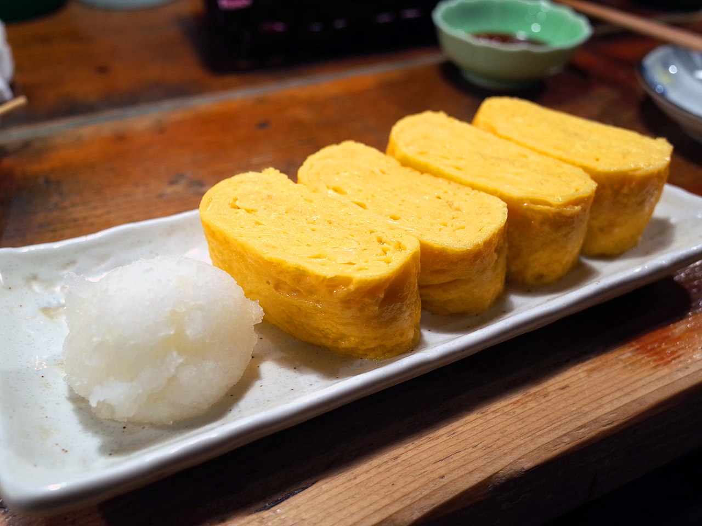

Home
Tamagoyaki

Description
Tamagoyaki is a Japanese rolled omelette that is made by rolling together thin layers of seasoned egg in a rectangular pan. It is a popular dish in Japan and is often served for breakfast or as a side dish. Tamagoyaki is sweet and savory, with a light and fluffy texture that makes it a favorite among both children and adults.
Ingredients
- 4 eggs
- 2 tbsp sugar
- 1 tbsp soy sauce
- 1 tbsp mirin
- 1/2 tsp salt
- Oil
Steps
- Crack the eggs into a bowl and add the sugar, soy sauce, mirin, and salt.
- Whisk the mixture until well combined.
- Heat a rectangular pan over medium heat and brush with oil.
- Pour a thin layer of the egg mixture into the pan and tilt to spread evenly.
- When the egg is set but still slightly runny, roll it up from one end of the pan to the other.
- Push the rolled egg to the other end of the pan and brush with oil.
- Pour another thin layer of the egg mixture into the pan, lifting the rolled egg to let the new layer flow underneath.
- When the new layer is set but still slightly runny, roll it up with the existing egg roll.
- Repeat the process until all the egg mixture is used.
- Remove the rolled omelette from the pan and let it cool slightly before
slicing into rounds.